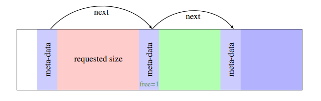
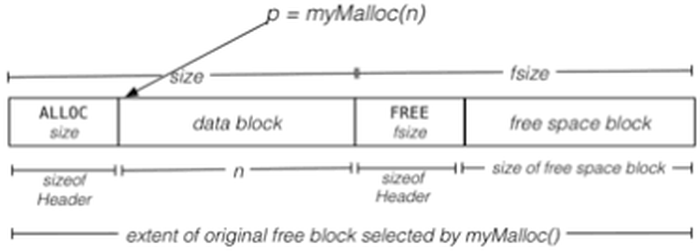

Kelton Wong
🚀 Welcome to my website!
Hello! My name is Kelton Wong, I am 23 years old, and I am an aspiring Software Engineer.
🎓 Education
Rutgers University New Brunswick, NJ
Bachelor of Science in Computer Science
I'm a recent graduate! Class of 2022
👩🏽🚀 Projects
Spider quest is an arcade-style game coded in Unity where you play as a spider that defeats enemies by creating web loops around them. When you create a complete loop of webs, all the enemies within the loop will be defeated, increasing your score. However, deploying webs will lower your speed, so use them wisely. Every enemy has a unique movement pattern that will force the player to make quick decisions on the fly. Be aware that the pace of the game accelerates the longer you survive. Good luck webbing!
Movement: WASD / Arrow Keys
Deploy Web: Space Bar (Hold)
Pause: P / Esc
Start: Enter
This game was created as a passion project between friends.
Check out the repository on GitHub! 
This game was built using:


MyMalloc is my own implementation of C's malloc function for dynamic memory allocation.
This project was designed to mimic the low-level logic behind C's <stdlib.h> malloc() & free(). It internally uses a 4096 byte array to simulate heap memory, and a firstfit algorithm for memory management.
Big Picture:
On Function Call:
The MyMalloc library was created as a project for Rutgers University's Systems Programming course.
Check out the repository on GitHub!
This library was built with:

I built this website to showcase my skills and experience. I used a standard HTML, Javascript, and CSS stack. In addition, I used the Three.js Javascript library to create the animated 3D graphics you see in the background! ViteJS was also used to speed up development. ViteJS is a build tool which provides a faster and leaner development environment for modern web projects.
Check out the repository on GitHub!
This website was built using:


💻 Work History
RCSB Protein Data Bank
Software Engineer Intern
During the summer of 2020, I had the pleasure of working as a Software Engineer Intern at the Research Collaboratory of Structural Bioinformatics: Protein Data Bank. During my internship I was tasked with data organization, cleansing, and visualization for the PDB website's protein search/query tool. By building queries in MongoDB, I highlighted visually apparent data trends so as to provide insight on how users were interacting with the website's protein search function. I used MongoDB Charts for visualization in order to preserve native MongoDB functionalities, as the company was already using MongoDB for database management.
Stoke Therapeutics
Software Engineer Intern
I worked as a Software Engineer Intern at Stoke Therapeutics during the Summer of 2018. My task was to automate the process of designing and ordering oligonucleotides (molecules used by Stoke's scientists to develop medication for genetic diseases). The project was coded in Python, and driven by Snakemake -a workflow management tool used to create reproducable and scalable data analyses. After the core of the project was completed, I obtained requirements and security standards from Stoke's scientists in order to create a secure front-end interface for internal use. This interface was put together using HTML, Javascript, JQuery, and CSS (with Bootstrap).
Baskin Robbins
Crewmate
During the entirety of 2016-2017, and 2021-2022, I worked as a crewmate for a multinational chain of ice cream stores known as Baskin Robbins. Even though the direction of my career has changed, I still value my experience working in the service industry. At this job, I learned various soft skills such as communication, time-management, and teamwork. This job also taught me about responsibility, accountability, and professionalism; Qualities which have translated directly into my work as a programmer.
🏆 Coursework
Introduction to Computer Science, Data Structures, Computer Architecture, Discrete Structures 1, Discrete Structures 2, Systems Programming, Principles of Programming Languages, Principles of Information and Database Management, Internet Technology, Design and Analysis of Computer Algorithms, Distributed Systems: Concepts and Design, Introduction to Artificial Intelligence, Calculus 1, Calculus 2, Linear Algebra, Linear Optimization
🛠️ Skills
Languages: Java, C, Python3, Pandas, R, SQL, MongoDB, HTML5, CSS, JavaScript, C#, Scheme, Prolog
Technologies: MongoDB Charts, Snakemake, Docker, Google Cloud Platform, GitHub, Unix Terminal
General: Full Stack Development, Mathematics, Problem Solving, Teamwork, Communication, Time Management, 3D Modeling, 3D Printing
I am a U.S. Citizen, and I am available to start working full time immediately!